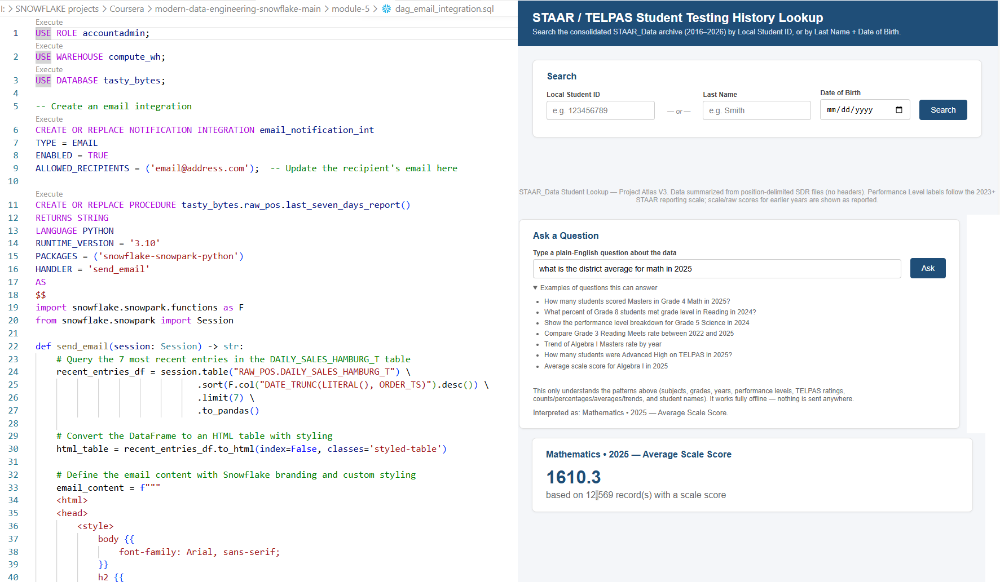
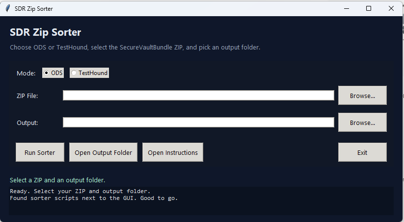
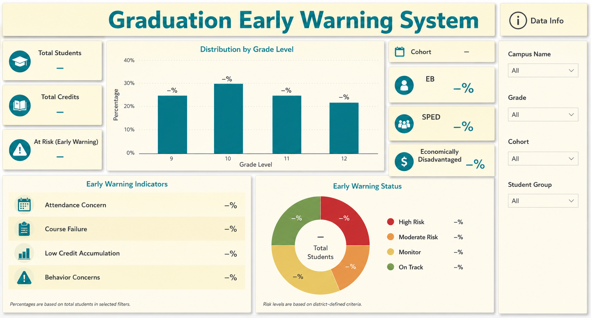
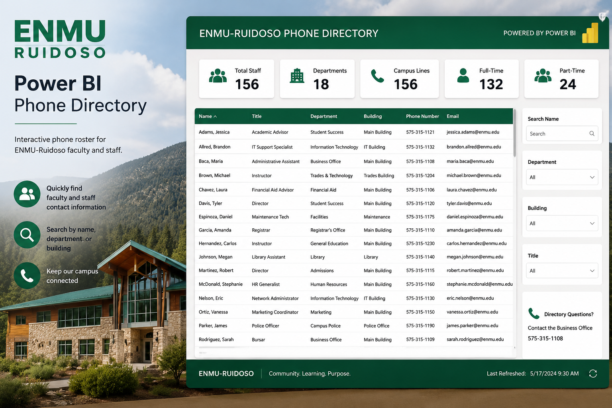

> WORK ARCHIVE LOADED
Solutions
Data, analytics, and automation solutions built to improve accuracy, reporting, and workflow efficiency

District Data Platform
Layered data warehouse using raw, staging, and analytics schemas.
> Problem
District data existed across multiple vendor systems
with no centralized reporting platform.
> Solution
Designed and implemented a district-wide data platform
integrating SIS, assessment vendors, and TEA data into centralized
reporting models and analytics workflows.
Snowflake
SQL
Power BI
Python
ETL
Data Modeling
> Impact
- 30,000 Students
- 50+ Campuses
- 10+ Power BI Models
- Executive Reporting
- Accountability Reporting
VIEW GITHUB

CCMR Classification Engine
TEA-aligned accountability logic for student CCMR buckets.
> Problem
CCMR accountability logic required multiple rules across IBC tiers, TSI, dual credit,
AP/IB, OnRamps, and special populations.
> Solution
Built classification logic to assign students into CCMR buckets, calculate IBC tier
status, and support weighted scoring.
SQL Server
Power BI
DAX
Accountability
> Impact
- Reduced manual CCMR interpretation.
- Aligned reporting to TEA accountability rules.
- Supported campus and district dashboards.

SDR Zip Sorter
Desktop automation tool for organizing state assessment files.
> Problem
SDR assessment files required manual sorting across STAAR, TELPAS, EOC, and
assessment vendors workflows.
> Solution
Built a Python/Tkinter desktop tool to select ZIP files, choose a workflow mode, sort
files, and generate unsorted logs.
Python
Tkinter
ZIP Processing
Automation
> Impact
- Reduced manual file handling.
- Standardized output folder structure.
- Created a GUI for non-technical users.
VIEW GITHUB

District Snapshot Dashboard
Multi-year accountability and demographic reporting prototype.
> Problem
Campus leaders needed one place to view accountability ratings, enrollment,
demographics, and student indicators.
> Solution
Designed a Power BI dashboard combining rating history, enrollment counts, grade
distribution, and student group indicators.
Power BI
DAX
Data Modeling
TEA Data
> Impact
- Created a single-page campus view.
- Improved access to accountability context.
- Supported data-informed campus conversations.

Graduation Early Warning System
Operational prototype dashboard for monitoring cohort progress.
> Problem
Graduation monitoring required student-level visibility into credits, cohort status,
campus distribution, and support indicators.
> Solution
Built an interactive Power BI dashboard with cohort counts, credit tracking, student
groups, and drilldown detail.
Power BI
DAX
Student Analytics
Executive Reporting
> Impact
- Improved visibility into cohort progress.
- Supported intervention planning.
- Turned static reports into actionable monitoring.

PeopleSoft Data Warehouse
ETL packages importing 79 extracts into SQL Server.
> Problem
Institutional reporting required reliable data from two PeopleSoft databases and
repeated extract processes.
> Solution
Designed and maintained SSIS packages to load structured extracts into a SQL Server data
warehouse for reporting.
SQL Server
SSIS
SSRS
SharePoint BI
> Impact
- Supported institutional compliance reporting.
- Improved reporting data reliability.
- Created reusable warehouse structures.

Assessment AI Search
Local search prototype for SDR assessment records and student history.
> Purpose
Built to explore how local assessment data could be searched,
indexed, and queried without depending on a full cloud platform.
Python
SQLite
Data Search
Assessment Data
> Features
- Search by student name, DOB, local ID, or TSDS ID.
- Combines student identity and assessment result tables.
- Returns assessment history and source file details.

Automation Lab
Small tools, scripts, and experiments for reducing repetitive work.
> Purpose
A collection of small personal experiments using Python,
PowerShell, Power Automate, and file-processing workflows.
Python
PowerShell
Power Automate
File Tools
> Experiments
- Batch file conversion.
- Folder organization utilities.
- Data cleanup helpers.
- Workflow prototypes.

Power BI Phone Directory
Mobile-friendly phone directory integrated with Microsoft Teams.
> Problem
Staff needed a searchable phone directory that worked across desktop and mobile devices
without relying on static PDF exports.
> Solution
Built an automated workflow using Power Automate, Power Apps, Mitel Connect Director,
and
Power BI to create a live phone directory embedded directly inside Microsoft Teams.
Power BI Power Automate Power
Apps
Microsoft Teams Mitel Connect
> Impact
- Automated phone directory updates.
- Provided mobile-friendly staff lookup.
- Embedded directly into Teams.
- Supported multi-format export and printing.
COMPUTER
INVENTORY
LOOKUP
Power BI Computer Inventory Lookup
Searchable computer inventory built from Active Directory, Banner ERP, SQL, Power BI, and
PDQ.
> Problem
Technology inventory data was spread across multiple systems, making it difficult to
quickly look up devices,
users, locations, and related support information.
> Solution
Built a Power BI lookup tool that combined Active Directory, Banner ERP, SQL data, and
PDQ inventory
information into a searchable technology asset view.
Power BI
SQL
Active Directory
Banner ERP
PDQ
> Impact
- Created a searchable computer inventory view.
- Connected user, device, and system data.
- Improved technology support lookup workflows.
- Reduced time spent hunting across separate systems.